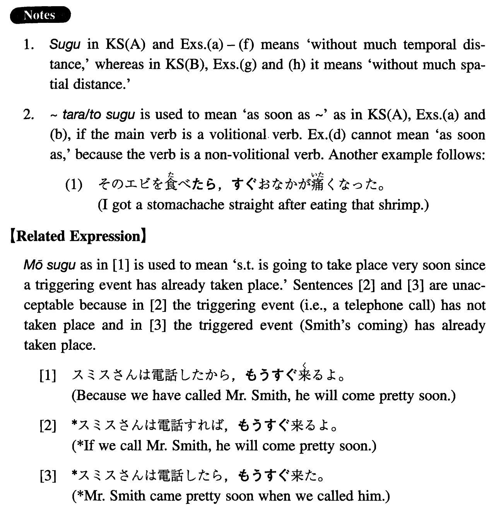

すぐ (I. 439)
- (ksa).
- 家に帰ったらすぐ、寝てしまいました。
- I went to sleep as soon as I got home.
- (ksb).
- 銀行は駅のすぐ前です。
- The bank is right in front of the station.
- (a).
- 部長は会社に着くとすぐ、仕事を始めた。
- The departmental head started to work as soon as he arrived at the company.
- (b).
- 日本に来たらすぐ、電話して下さい。
- Please call me as soon as you come to Japan.
- (c).
- 話したいから、すぐ来て下さい。
- I want to talk with you, so please come right away.
- (d).
- 安いテレビを買ったらすぐ、壊れてしまいました。
- I bought a cheap TV and it broke right away.
- (e).
- あの人はすぐ怒るから、嫌いだ。
- He easily gets angry so I don't like him.
- (f).
- その数学の問題はすぐ解けた。
- I could solve that math problem easily.
- (g).
- 私の家はすぐそこです。
- My house is right there.
- (h).
- 郵便局はスーパーのすぐ隣です。
- The post-office is right next to the supermarket.
